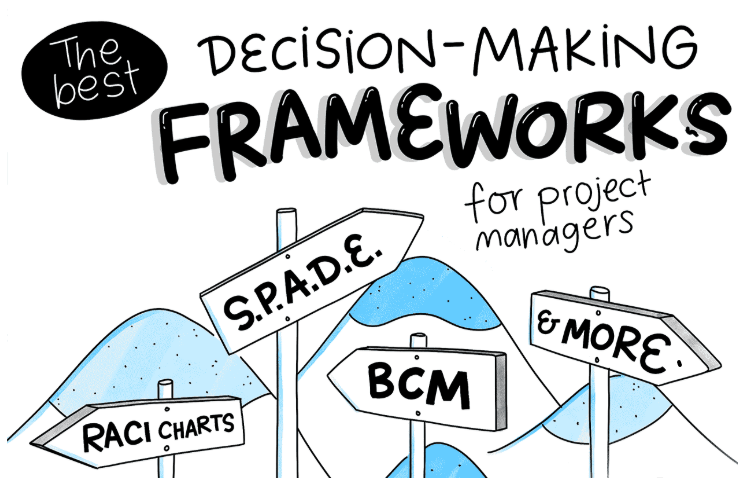

Strategy Case Studies
A selection of strategy, growth, and business performance work across consulting, business operations, corporate strategy, and decision infrastructure building.
Strategy case
—
—

Sample artifact illustrating structured analysis, performance framing, and decision support.
Additional decision system work
Beyond formal strategy projects, I’ve also built decision infrastructure that helps leadership connect performance signals to investment decisions.